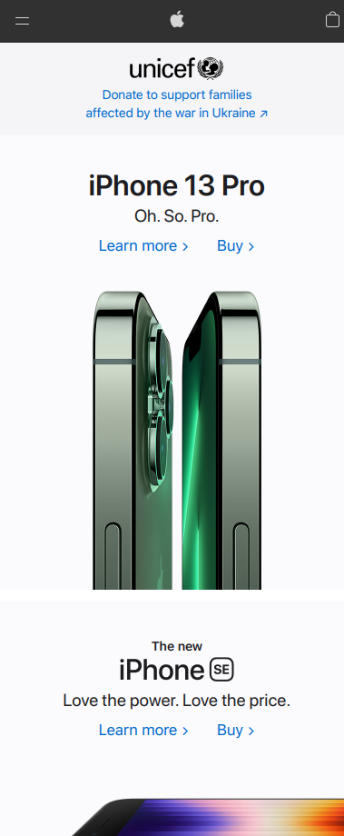

PARC: Proximity
Wikipedia
wikipedia.orgWikipedia has a good example of proximity on their landing page. While it's mostly words and has potential to be confusing, the user can see what belongs together based only on proximity. At the bottom of the page, the same proximity is achieved with icons.
PARC: Alignment
Deku Deals
dekudeals.comDeku Deals effectively demonstrates alignment by having each picture perfectly in line with the others. There are two identical columns and each picture aligns with the picture below and and to the side.
PARC: Repetition
Apple
apple.com There aren't many companies more well known than Apple for repetition with colors and branding. The stark, clean white that Apple is known for is front and center on their site. There is repetition with the prevalence of the Apple logo and the 'i' naming convention.